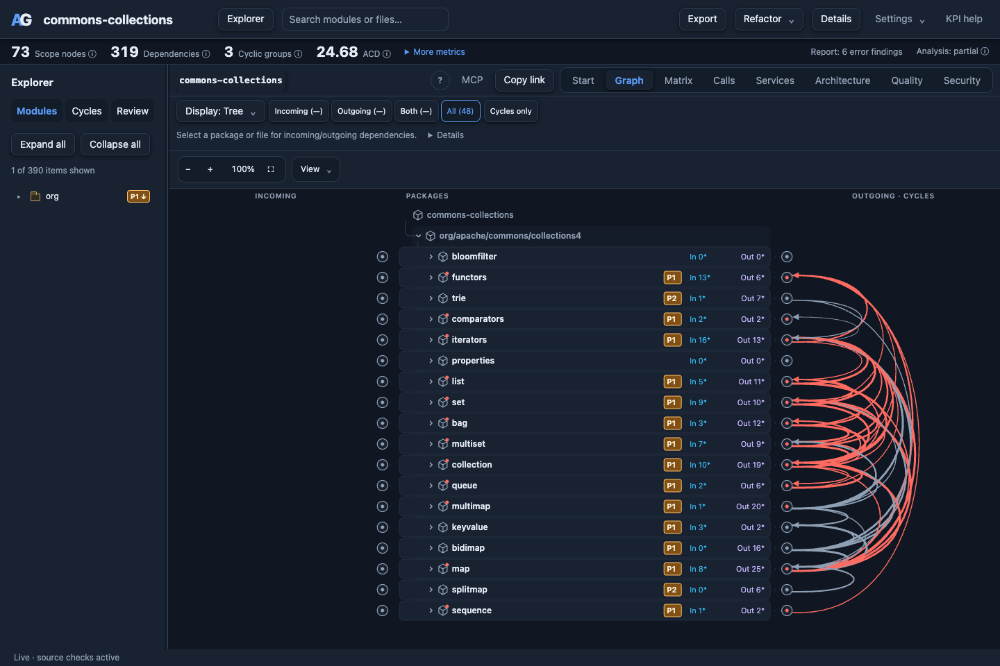

Apache Commons Collections
Explore packages, cycles and dependency counts in a Java library.
This example uses Apache Commons Collections 4.6.0, pinned to commit 4107624de41aeed37985d2a069fad41992fd71a2. It is an independent Apache project, not an endorsement of ArchGuard.
1. Get the pinned source
Run these commands from the ArchGuard repository root:
git clone --depth 1 --single-branch \
--branch rel/commons-collections-4.6.0 \
https://github.com/apache/commons-collections.git \
examples/checkouts/commons-collections
git -C examples/checkouts/commons-collections rev-parse HEADVerify that the printed revision matches the commit above. Keep the upstream LICENSE.txt and NOTICE.txt with the checkout.
2. Start the viewer
archguard --config examples/commons-collections.toml \
serve examples/checkouts/commons-collections \
--port 8788 --depth 4Open http://127.0.0.1:8788/. The supplied configuration excludes test sources. Depth 4 exposes the children of org/apache/commons/collections4.

3. Explore three views
- World View: explore the package landscape. Select a package to move into its contents; choose an available metric to change the lens.
- Graph: select a package and compare incoming and outgoing dependencies. Inspect cycle groups and supporting source references.
- Matrix: read dependency counts by source row and target package. Expand a package to inspect its files and associated cycle groups.
Use Details or Enter to inspect a selection, and Esc to close its overlay. The viewer's help explains navigation, metrics and coverage limits.
Understand the result
Import analysis does not require building Commons Collections. Compiler-backed calls and metrics require a suitable JDK and project references. Counts can differ across graph levels, evidence types and ArchGuard revisions. The screenshots are example captures, not a fixed benchmark.
Upstream: pinned Commons Collections source · Apache-2.0.